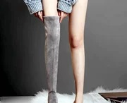

你好，世界！
hello world !! world hello
你好，世界！
lakrhtglairjfskghdla看来是的风格和令人反感lakrhtglairjfskghdla看来是的风格和令人反感lakrhtglairjfskghdla看来是的风格和令人反感lakrhtglairjfskghdla看来是的风格和令人反感lakrhtglairjfskghdla看来是的风格和令人反感lakrhtglairjfskghdla看来是的风格和令人反感
hello world !!!
hello world !!!
